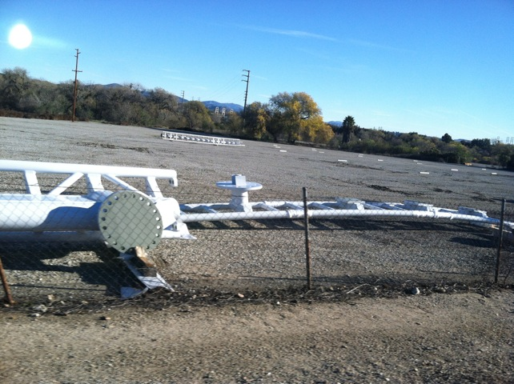
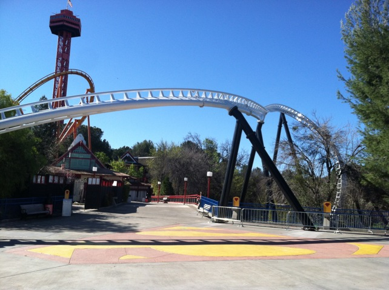
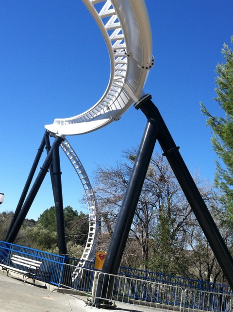
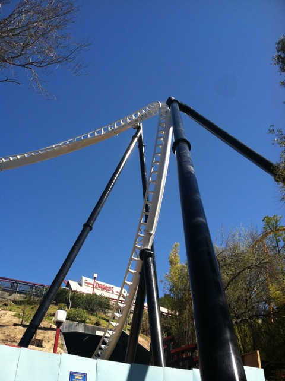
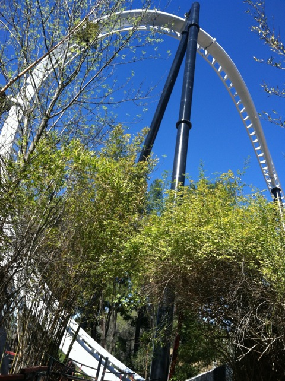
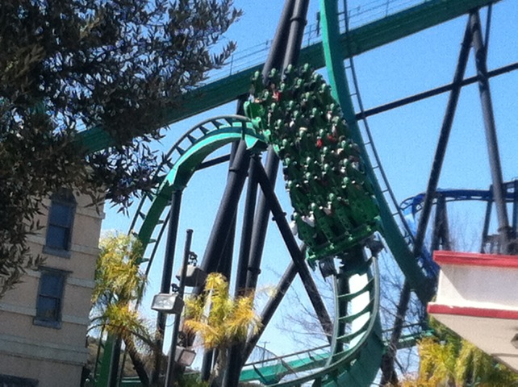
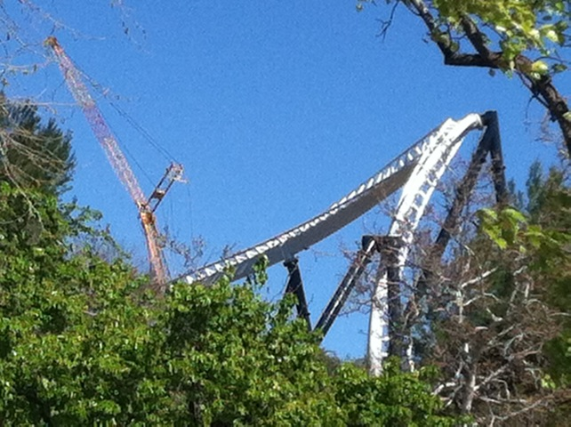

First 2013 Update

All right. This isn't a proper update as we haven't really done any real theme park trips yet in 2013. All we've done this year so far is Six Flags Magic Mountain. Yeah, its been too busy so far to do much else, but hey. We have big plans for 2013 later, and you can see, you're going to be seeing a LOT of Full Throttle Construction this update.
Yeah. While all the other 2013 Coasters were going vertical and adding track, Full Throttle was just a dirt plot with a few footers at best.
Mid February, the biggest news on Full Throttle was this footer on Samuri Summet.

Finally in March, Full Throttle finally goes vertical, right when Outlaw Run opens at Silver Dollar City =) (Seriously, that ride looks amazing. I can't wait to ride it this summer).

Though Full Throttle looks pretty good as well. Love how close the Flying Snake Dive is to the track.

Yeah. This ride has a Flying Snake Dive. Considering how much I loved the Flying Snake Dive on Storm Runner @ Hersheypark, this is going to be amazing.
 This is most likely going to be the highlight of the ride. =)
This is most likely going to be the highlight of the ride. =)
 I love this shot. Really can't wait to get it on video.
I love this shot. Really can't wait to get it on video.

Want another construction photo of the Flying Snake Dive? Well want one or not, here's another one.
 I spy with my little eyes a really good headchopper.
I spy with my little eyes a really good headchopper.
In the X2 break room, you can still see the old yellow support and peices of the old train.

In other news, Riddlers Revenge got a new second train, which is good. Except for the fact that it needs the seats to lower.
Oh yeah. They finally managed to put their Slingshot up.
These rides are awesome. Glad we get to get on it for free. =)
 Terminators also getting a little bit of a shuffle, but don't worry. Nothing too bad.
Terminators also getting a little bit of a shuffle, but don't worry. Nothing too bad.

One last construction photo of Full Throttle.
Oh, and we found a new resteraunt in Valencia called Rattlers. This place is amazing. We totally have to eat here more often. =)
Home